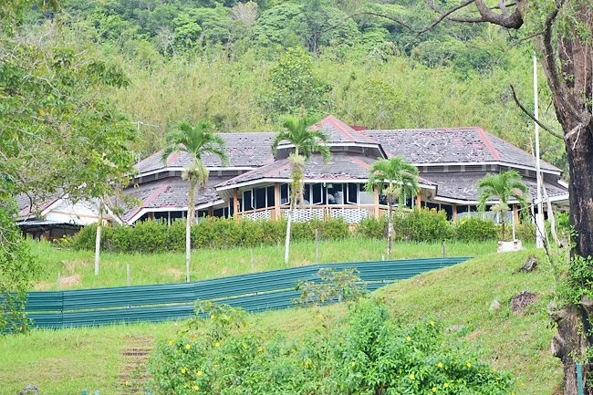
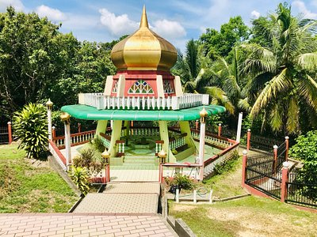

HERITAGE
Bubungan Dua Belas, Brunei’s Heritage
One of the must visit places in Brunei Darussalam is Bubungan Dua Belas which literary means the building with twelve roofs. It is one of the oldest surviving buildings in Brunei Darussalam. Bubungan Dua Belas is not only the oldest building in Brunei but also very rare example of wooden architecture.
Labu Estate
Kampong Labu Estate is a village in Temburong District, Brunei, about 16 kilometres from the district town Bangar. The population was 152 in 2016. It is one of the villages within Mukim Labu.